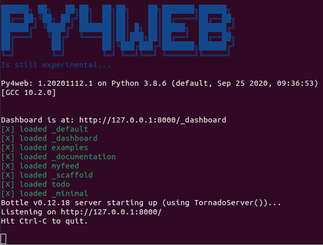
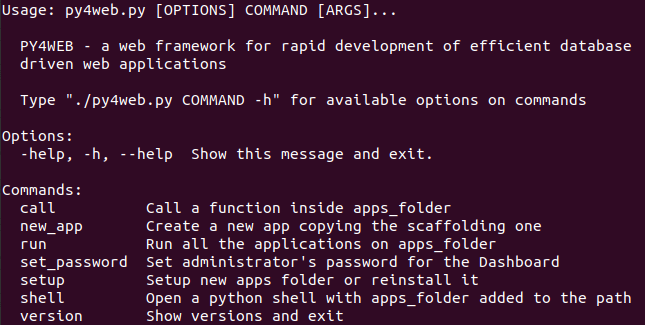

Installation and Startup¶
Supported platforms and prerequisites¶
PY4WEB runs fine on Windows, MacOS and Linux. Its only prerequisite is Python 3.6+, which must be installed in advance (except if you use binaries).
Setup procedures¶
There are four alternative ways of running py4web, with different level of difficulty and flexibility. Let’s look at the pros and cons.
Installing from binaries¶
This is not a real installation, because you just copy a bunch of files on your system without modifying it anyhow. Hence this is the simplest solution, especially for newbies or students, because it does not require Python pre-installed on your system nor administrative rights. On the other hand, it’s experimental, it could contain an old py4web release and it is quite difficult to add other functionalities to it.
In order to use it you just need to download the latest Windows or MacOS ZIP file from this external repository. Unzip it on a local folder and open a command line there. Finally run
py4web-start set_password
py4web-start run apps
With this type of installation, remember to always use py4web-start instead of ‘py4web’ or ‘py4web.py’ in the following documentation.
Hint: use a virtual environment (virtualenv)¶
A full installation of any complex python application like py4web will surely modify the python environment of your system. In order to prevent any unwanted change, it’s a good habit to use a python virtual environment (also called virtualenv, see here for an introduction). This is a standard python feature; if you still don’t know virtualenv it’s a good time to start its discovery!
Activate it before using any of the following real installation procedures is highly reccomended.
Installing from pip¶
Using pip is the standard installation procedure for py4web, since it will quickly install the latest stable release of py4web.
From the command line
python3 -m pip install --upgrade py4web --no-cache-dir --user
but do not type the –user option with virtualenv or a standard Windows installation which is already per-user.
Also, if python3 does not work, try with the simple python command instead.
This will install py4web and all its dependencies on the system’s path only. The assets folder (that contains the py4web’s system apps) will also be created. After the installation you’ll be able to start py4web on any given working folder with
py4web setup apps
py4web set_password
py4web run apps
If the command py4web is not accepted, it means it’s not in the system’s path. On Windows, a special py4web.exe file (pointing to py4web.py) will be created by pip on the system’s path, but not if you type the –user option by mistake.
Installing from source (globally)¶
This is the traditional way for installing a program, but it works only on Linux and MacOS (Windows does not normally support the make utility). All the requirements will be installed on the system’s path along with links to the py4web.py program on the local folder
git clone https://github.com/web2py/py4web.git
cd py4web
make assets
make test
make install
py4web run apps
Also notice that when installing in this way the content of
py4web/assets folder is missing at first but it is manually created
later with the make assets command.
Installing from source (locally)¶
In this way all the requirements will be installed or upgraded on the system’s path, but py4web itself will only be copied on a local folder. This is especially useful if you already have a working py4web installation but you want to test a different one. Also, installing from sources (locally or globally) will install all the latest changes present on the master branch of py4web - hence you will gain the latest (but potentially untested) code.
From the command line, go to a given working folder and then run
git clone https://github.com/web2py/py4web.git
cd py4web
python3 -m pip install --upgrade -r requirements.txt
Once installed, you should always start it from there with:
./py4web.py setup apps
./py4web.py set_password
./py4web.py run apps
If you have installed py4web both globally and locally, notice the ./ ; it forces the run of the local folder’s py4web and not the globally installed one.
python3 py4web.py setup apps
python3 py4web.py set_password
python3 py4web.py run apps
On Windows, the programs on the local folder are always executed before the ones in the path (hence you don’t need the ./ as on Linux). But running .py files directly it’s not usual and you’ll need an explicit python3/python command.
Upgrading¶
If you installed py4web from pip you can simple upgrade it with
python3 -m pip install --upgrade py4web
Warning
This will not automatically upgrade the standard apps like Dashboard and Default. You have to manually remove these apps and then run
py4web setup apps
in order to re-install them. This is a safety precaution, in case you made changes to those apps.
If you installed py4web in any other way, you must upgrade it manually. First you have to make a backup of any personal py4web work you’ve done, then delete the old installation folder and re-install the framework again.
First run¶
Running py4web using any of the previous procedure should produce an output like this:
# py4web run apps

Generally apps is the name of the folder where you keep all your
apps, and can be explicitly set wit the run command. If that
folder does not exist, it is created. PY4WEB expects to find at least
two apps in this folder: Dashboard (_dashboard) and Default
(_default). If it does not find them, it installs them.
Dashboard is a web based IDE. It will be described in the next chapter.
Default is an app that does nothing other than welcome the user.
Note
Some apps - like Dashboard and Default - have a special role in py4web and therefore their actual name starts with _
to avoid conflicts with apps created by you.
Once py4web is running you can access a specific app at the following urls:
http://localhost:8000
http://localhost:8000/_dashboard
http://localhost:8000/{yourappname}/index
In order to stop py4web, you need to hit Control-C on the window where you run it.
Note
ONLY the Default app is special because if does not require the “{appname}/” prefix in the path, like all the other apps do.
In general you may want to symlink apps/_default to your default app.
For all apps the trailing /index is optional.
Warning
For Windows: it could be that Ctrl-C does not work in order to stop py4web.
In this case, try with Ctrl-Break or Ctrl-Fn-Pause.
Command line options¶
py4web provides multiple command line options which can be listed by running it without any argument
# py4web

You can have additional help for a specific command line option by running it with the –help or -h argument.
call command option¶
# py4web call -h
Usage: py4web.py call [OPTIONS] APPS_FOLDER FUNC
Call a function inside apps_folder
Options:
-Y, --yes No prompt, assume yes to questions [default: False]
--args TEXT Arguments passed to the program/function [default: {}]
-help, -h, --help Show this message and exit.
new_app command option¶
# py4web new_app -h
Usage: py4web.py new_app [OPTIONS] APPS_FOLDER APP_NAME
Create a new app copying the scaffolding one
Options:
-Y, --yes No prompt, assume yes to questions [default:
False]
-s, --scaffold_zip TEXT Path to the zip with the scaffolding app
-help, -h, --help Show this message and exit.
This currently gives an error on binaries installations and from source installation (locally), because they miss the asset zip file.
run command option¶
# py4web run -h
Usage: py4web.py run [OPTIONS] APPS_FOLDER
Run all the applications on apps_folder
Options:
-Y, --yes No prompt, assume yes to questions
[default: False]
-H, --host TEXT Host name [default: 127.0.0.1]
-P, --port INTEGER Port number [default: 8000]
-p, --password_file TEXT File for the encrypted password [default:
password.txt]
-s, --server [default|wsgiref|tornado|gunicorn|gevent|waitress|
geventWebSocketServer|wsgirefThreadingServer|rocketServer]
server to use [default: default]
-w, --number_workers INTEGER Number of workers [default: 0]
-d, --dashboard_mode TEXT Dashboard mode: demo, readonly, full, none
[default: full]
--watch [off|sync|lazy] Watch python changes and reload apps
automatically, modes: off, sync, lazy
[default: off]
--ssl_cert PATH SSL certificate file for HTTPS
--ssl_key PATH SSL key file for HTTPS
-help, -h, --help Show this message and exit.
If you want py4web to automatically reload an application upon any changes to files of that application, you can:
for immediate reloading (sync-mode):
py4web run --watch=syncfor reloading on any first incoming request to the application has been changed (lazy-mode):
py4web run --watch=lazy
The default web server used is currently Tornado, but you can change this behaviour with the server option.
Also, for advanced users, you can specify the optional --usegevent directive like in this example:
py4web --usegevent run -s geventWebSocketServer apps
Warning
The optional --usegevent directive must be used with gevent or geventWebSocketServer webservers (in order to apply monkey patching)
and shouldn’t be used with tornado and waitress.
set_password command option¶
# py4web set_password -h
Usage: py4web.py set_password [OPTIONS]
Set administrator's password for the Dashboard
Options:
--password TEXT Password value (asked if missing)
-p, --password_file TEXT File for the encrypted password [default:
password.txt]
-h, -help, --help Show this message and exit.
If the --dashboard_mode is not demo or none, every time
py4web starts, it asks for a one-time password for you to access the
dashboard. This is annoying. You can avoid it by storing a pdkdf2 hashed
password in a file (by default called password.txt) with the command
py4web set_password
It will not ask again unless the file is deleted. You can also use a custom file name with
py4web set_password my_password_file.txt
and then ask py4web to re-use that password at runtime with
py4webt run -p my_password_file.txt apps
Finally you can manually create the file yourself with:
python3 -c "from pydal.validators import CRYPT; open('password.txt','w').write(str(CRYPT()(input('password:'))[0]))"
password: *****
setup command option¶
# py4web setup -h
Usage: py4web.py setup [OPTIONS] APPS_FOLDER
Setup new apps folder or reinstall it
Options:
-Y, --yes No prompt, assume yes to questions [default: False]
-help, -h, --help Show this message and exit.
This option create a new apps folder (or reinstall it). If needed, it will ask for the confirmation of the new folder’s creation and then for copying every standard py4web apps from the assets folder. It currently does nothing on binaries installations and from source installation (locally) - for them you can manually copy the existing apps folder to the new one.
shell command option¶
# py4web shell -h
Usage: py4web.py shell [OPTIONS] APPS_FOLDER
Open a python shell with apps_folder's parent added to the path
Options:
-Y, --yes No prompt, assume yes to questions [default: False]
-h, -help, --help Show this message and exit.
Py4web’s shell is just the regular python shell with apps added to the search path. Notice that the shell is for all the apps, not a single one. You can then import the needed modules from the apps you need to access.
For example, inside a shell you can
from apps.myapp import db
from py4web import Session, Cache, Translator, DAL, Field
from py4web.utils.auth import Auth
version command option¶
# py4web version -h
Usage: py4web.py version [OPTIONS]
Show versions and exit
Options:
-a, --all List version of all modules
-h, -help, --help Show this message and exit.
With the -all option you’ll get the version of all the available python
modules, too.
Special deployments¶
WSGI¶
py4web is a standard WSGI application. So, if a full program installation it’s not feasible you can simply run py4web as a WSGI app. For example, using gunicorn-cli, create a pyton file:
# py4web_wsgi.py
from py4web.core import wsgi
application = wsgi(apps_folder="apps")
and then start the application using cli:
gunicorn -w 4 py4web_wsgi:application
The wsgi function takes arguments with the same name as the command line arguments.
Deployment on GCloud (aka Google App Engine)¶
Login into the Gcloud console and create a new project. You will obtain a project id that looks like “{project_name}-{number}”.
In your local file system make a new working folder and cd into it:
mkdir gae
cd gae
Copy the example files from py4web (assuming you have the source from github)
cp /path/to/py4web/development_tools/gcloud/* ./
Copy or symlink your apps folder into the gae folder, or maybe make
a new apps folder containing an empty __init__.py and symlink the
individual apps you want to deploy. You should see the following
files/folders:
Makefile
apps
__init__.py
... your apps ...
lib
app.yaml
main.py
Install the Google SDK, py4web and setup the working folder:
make install-gcloud-linux
make setup
gcloud config set {your email}
gcloud config set {project id}
(replace {your email} with your google email account and {project id} with the project id obtained from Google).
Now every time you want to deploy your apps, simply do:
make deploy
You may want to customize the Makefile and app.yaml to suit your needs.
You should not need to edit main.py.
Deployment on PythonAnywhere.com¶
Watch the YouTube video and follow the detailed
tutorial
. The bottle_app.py script is in
py4web/deployment_tools/pythonanywhere.com/bottle_app.py